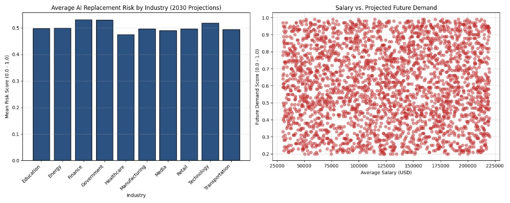

Unit 5
Module: Launch into Computing
Data Analytics with Python and Data Storage Reflection
Reflection dataset: AI Impact on Future Jobs Market in 2030 (muhammadwaqas023)
by Eziuche Emmanuel
code </>
import kagglehub
from kagglehub import KaggleDatasetAdapter
import pandas as pd
import matplotlib.pyplot as plt
# Load the dataset using kagglehub adapter
df_raw = kagglehub.load_dataset(
KaggleDatasetAdapter.PANDAS,
"muhammadwaqas023/ai-impact-in-future-on-jobs-market-in-2030",
"AI_Impact_on_Jobs_2030.csv"
)
# Create a copy to preserve raw data
df = df_raw.copy()
# Fix column names, typos, and casing issues for easier handling
df.rename(columns={
'Industory': 'Industry',
'job_Title': 'Job_Title',
'Year of Experience': 'Years_Experience',
'Ai Replacement': 'AI_Replacement_Risk',
'Future Demand': 'Future_Demand_Score',
'Remote Work': 'Remote_Work_Possibility',
'AVG Salary': 'Average_Salary_USD'
}, inplace=True)
# Fill missing categorical values to keep rows intact during grouping
df['Industry'] = df['Industry'].fillna('Unknown')
df['Education_Level'] = df['Education_Level'].fillna('Unknown')
# Ensure salary is numeric and handle missing values using the median
df['Average_Salary_USD'] = pd.to_numeric(df['Average_Salary_USD'], errors='coerce')
median_salary = df['Average_Salary_USD'].median()
df['Average_Salary_USD'] = df['Average_Salary_USD'].fillna(median_salary)
# --- Basic Analysis & Statistics ---
mean_salary = df['Average_Salary_USD'].mean()
median_risk = df['AI_Replacement_Risk'].median()
salary_risk_corr = df['Average_Salary_USD'].corr(df['AI_Replacement_Risk'])
print("--- Data Summary ---")
print(f"Mean Salary: ${mean_salary:,.2f}")
print(f"Median AI Replacement Risk: {median_risk:.2f}")
print(f"Correlation (Salary vs AI Risk): {salary_risk_corr:.4f}\n")
# Aggregate risk and salary averages by industry sector
industry_summary = df.groupby('Industry')[['AI_Replacement_Risk',
'Average_Salary_USD']].mean().reset_index()
print("--- Industry Averages ---")
print(industry_summary)
# --- Visualisations ---
fig, (ax1, ax2) = plt.subplots(1, 2, figsize=(15, 6))
# Plot 1: Average AI Risk per Industry
ax1.bar(industry_summary['Industry'], industry_summary['AI_Replacement_Risk'],
color='#2c5282', edgecolor='black')
ax1.set_title('Average AI Replacement Risk by Industry (2030 Projections)')
ax1.set_xlabel('Industry')
ax1.set_ylabel('Mean Risk Score (0.0 - 1.0)')
ax1.set_xticklabels(industry_summary['Industry'], rotation=45, ha='right')
ax1.grid(axis='y', linestyle='--', alpha=0.5)
# Plot 2: Relationship between Salary and Future Demand
ax2.scatter(df['Average_Salary_USD'], df['Future_Demand_Score'], color='#c53030',
alpha=0.5)
ax2.set_title('Salary vs. Projected Future Demand')
ax2.set_xlabel('Average Salary (USD)')
ax2.set_ylabel('Future Demand Score (0.0 - 1.0)')
ax2.grid(True, linestyle='--', alpha=0.5)
# Adjust spacing and save chart output
plt.tight_layout()
plt.savefig('ai_job_market_analysis.png')
print("\nCharts saved as 'ai_job_market_analysis.png'")
Storage Model Reflection (SQL vs. NoSQL)
The structured, relational layout of the AI Job Market 2030 dataset highlights the distinct architectural trade-offs between Relational (SQL) and Non-Relational (NoSQL) storage models. Composed of discrete, predictable attributes such as uniform strings for industries alongside explicit numerical arrays for salary and risk metrics, this data maps directly onto a tabular paradigm. Utilizing a relational SQL management system enables database engineers to enforce strict schema constraints, implement declarative integrity controls, and execute complex statistical JOIN queries against secondary economic tables with mathematical precision (Kalita, Bhattacharyya and Roy, 2024). This structural rigidity satisfies compliance and data protection auditing requirements mandated by modern enterprise computing frameworks (Walton, 2024).
Conversely, a NoSQL database presents clear operational advantages if the application context scales to live, high-velocity ingestion. If the system transforms into a dynamic labor recommendation tool tracking global recruitment cycles via real-time web scraping, unstructured CV uploads, or streaming sentiment logs from professional platforms, a fixed SQL schema creates infrastructure bottlenecks. In that environment, a document-oriented or key-value NoSQL store provides superior horizontal partitioning and schema flexibility (Chang, 2022). Ultimately, SQL remains ideal for analyzing this static snapshot, whereas NoSQL is essential for distributed, high-velocity streaming platforms.
References
- Chang, V. (2022) Novel AI and Data Science Advancements for Sustainability in the Era of COVID-19. London, UK: Academic Press.
- Kalita, J.K., Bhattacharyya, D.K. and Roy, S. (2024) Fundamentals of Data Science: Theory and Practice. London, UK: Academic Press. Available at: https://www.sciencedirect.com/book/9780443186561/fundamentals-of-data-science (Accessed: 30 May 2026).
- Walton, D.J. (2024) Culturally Responsive Computing: An Introduction into Computer Science, Security, and Technology. Boston, MA: ROTEL. Available at: https://rotel.pressbooks.pub/culturally-responsive-computing/ (Accessed: 30 May 2026).